Caleb Sun
Top
-
Alchemy Earth
Exhibition identity -
A modern, elegant identity for a ceramic arts biennial held in the birthplace of porcelain.
-
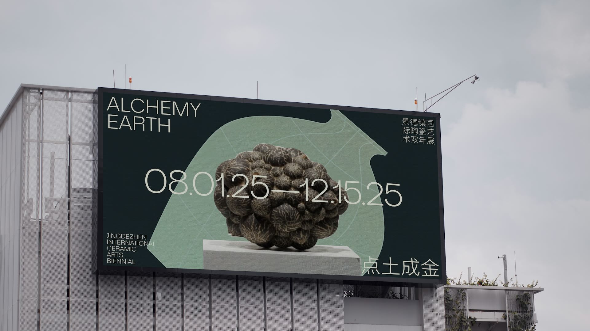
 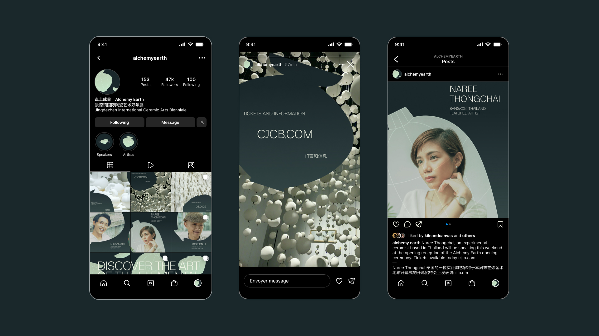
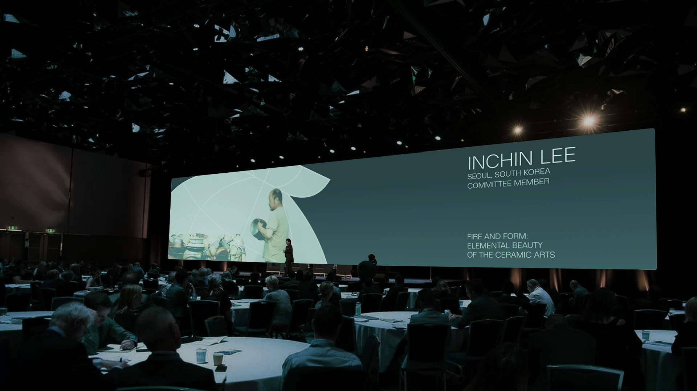
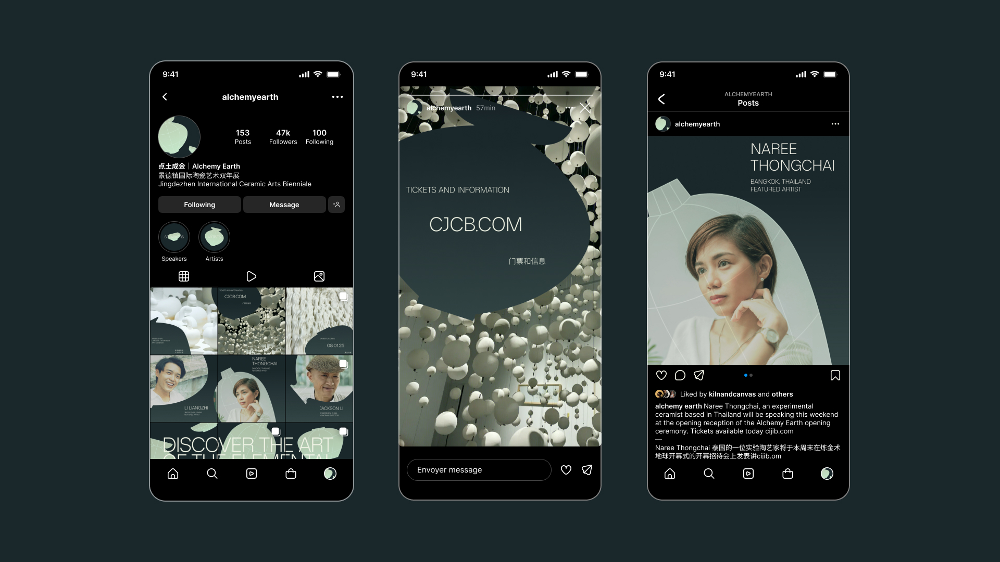
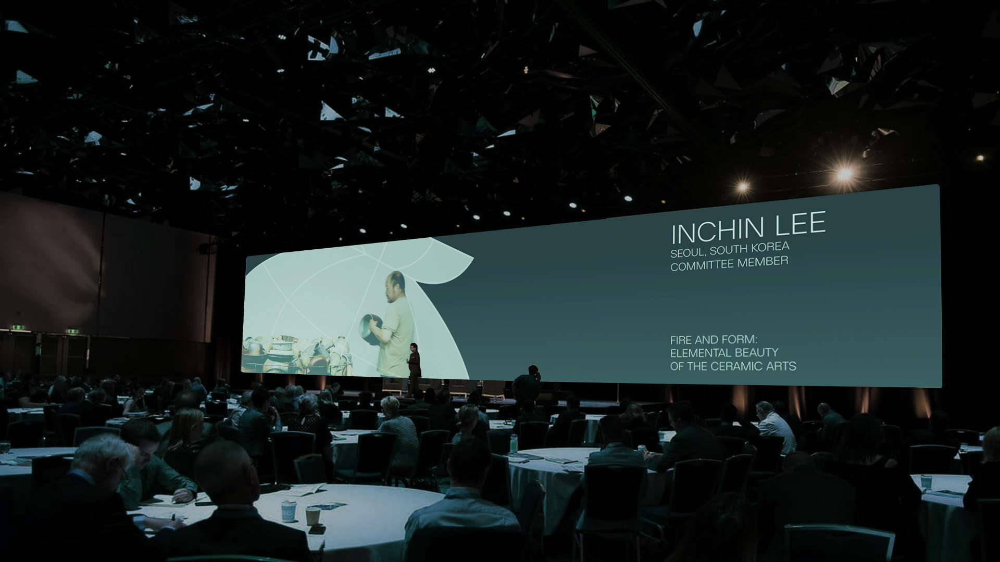
-
The Jingdezhen International Ceramic Arts Biennial is a celebration of the past, present, and future of the ceramic arts, held at the birthplace of porcelain some 3000 years ago. To this day, Jingdezhen remains a culture hub for ceramicists across the globe. The third edition of this biennial celebrates the beauty of an ageless craft, of transforming elements into art, through what audiences across continents and time can only describe as alchemy.
The Alchemy Earth exhibition identity is a response to the modernization of the ceramic arts. Elegant, simple, and bold, it provides a backbone for the breadth of experimental work exhibited throughout the biennial, without compromising on the roots of the craft. -
Time
Role -
5 weeks
Sole designer
Instructed by Kelsey Elder - 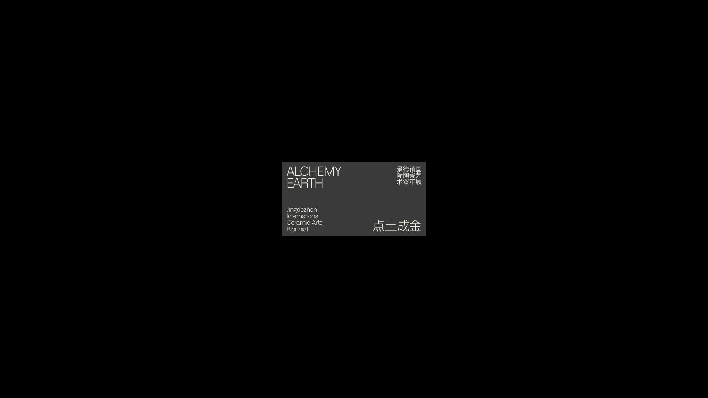
- 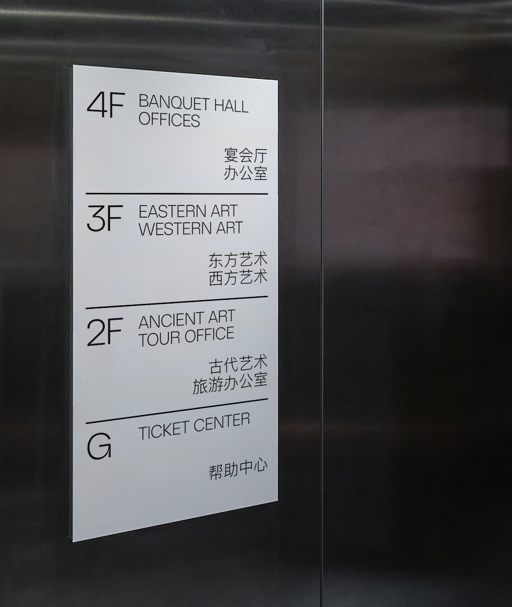
- 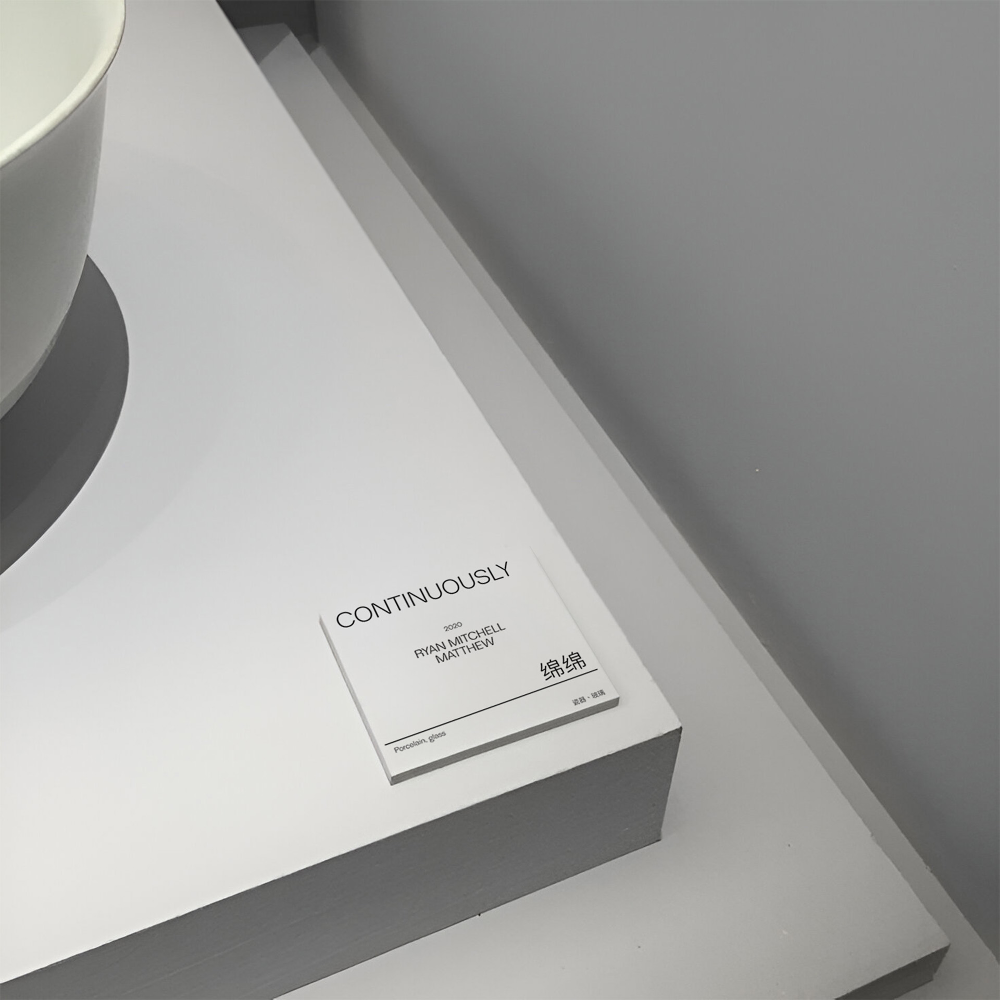
- 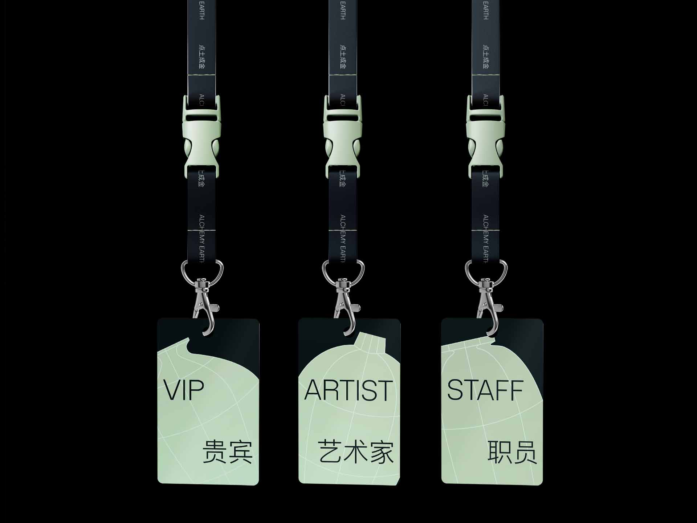
- 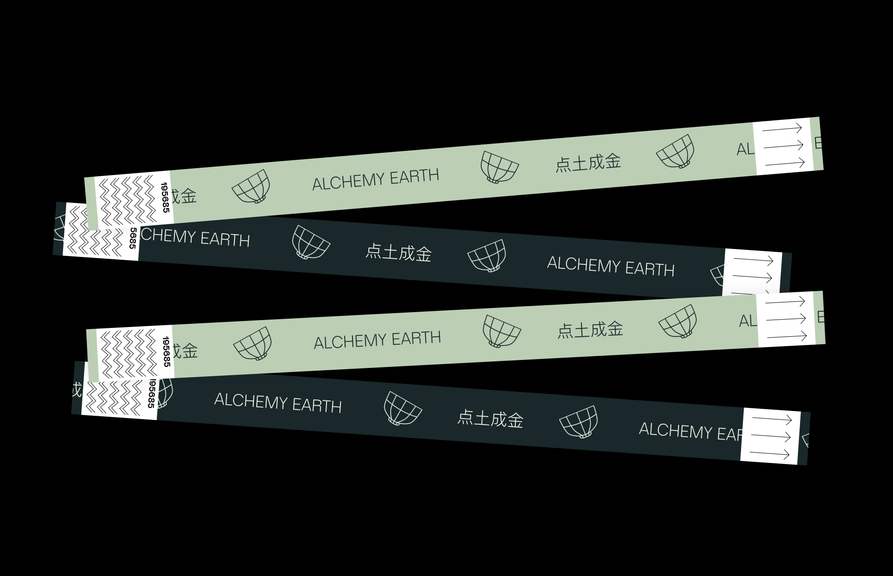
- 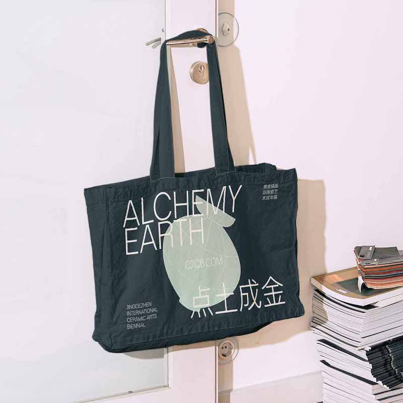
-

- 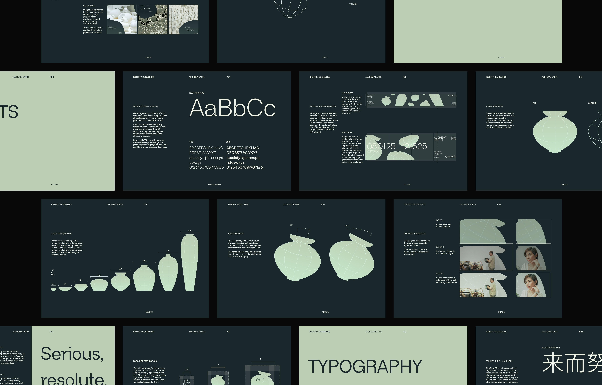
Designing a culturally sensitive backdrop for the past, present, and future of ceramics.
Brief
Design an exhibition identity that honors the unique space and time that Jingdezhen occupies in the history of the ceramic arts.
Early considerations
Jingdezhen is the birthplace of porcelain and has been a cultural capital for the ceramic arts for centuries. It is a cultural icon and source of national pride in China, and continues to be a powerhouse in the production of fine ceramic products to this day. This exhibition is a chance for ceramic artists from around the world to exhibit different ceramic arts techniques and philosophies, under the backdrop of a city steeped in history and legend.
The precedent set by previous iterations of the biennale left many things to be desired. While the biennale is sourced from a place of history and story and culture, the accompanying identity is generalistic.

As I set out to design an identity for the biennale, I wanted to capture the unique nature of the place and time that the biennale was being held, more so than the previous design.
Early Gestures and Concepts
In sketching, I explored a variety of gestural concepts that could correlate and respond to the themes I identified in my early research.
 Morphing type to the shape of ceramics captures the energy and dynamicism of the history of ceramics, but ultimately felt too edgy and didn't pair well with Chinese characters.
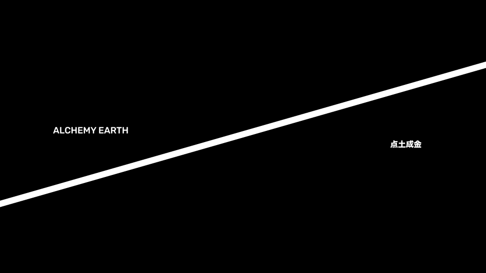A bisecting line at the angle of the traditional dragon kilns used to fire porcelain pulled inspiration from the making of ceramics, but struggled in oversimplifying the themes of the biennale.
Moving forward, I pulled inspiration from the first concept and centered the design system around a library of individual ceramic assets which aim to capture the diversity of work in the biennale by representing ceramics in a variety of shapes and sizes. These assets are abstracted and distant from reality, as to not impose any narrative upon the work shown, which are often far more speculative and structural than functional.